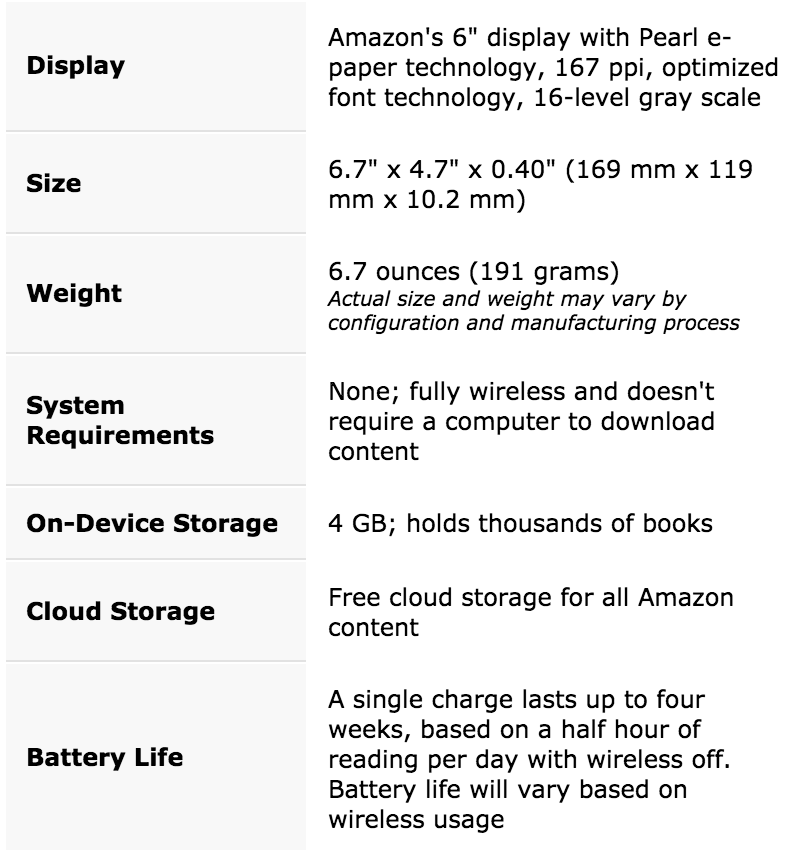

A touchscreen interface makes it easier to use features like X-Ray, Goodreads, built-in dictionary, highlighting, and more. And with a glare-free screen that looks like real paper, you can read as easily in bright sunlight as in your living room
Kindle does not require power to maintain a page of text, allowing you to read for weeks on a single charge.
Kindle weighs only 6.7 ounces (191 grams)
Words looked up in the dictionary are automatically added to Vocabulary Builder to expand your knowledge and reinforce retention. Swipe through your vocabulary words, quiz yourself with flashcards, and instantly see those words in context.